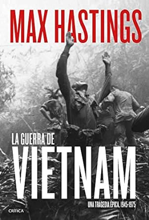

Libros Edad Contemporanea
La primera Guerra Mundial contada para escépticos

El escritor español Juan Eslava Galván, en homenaje a los 100 años de la guerra, publicó en 2014 este texto que narra el desarrollo de la Primera Guerra Mundial, con sus causas y consecuencias, haciendo hincapié en las personas más poderosas y con más peso a la hora de tomar decisiones políticas. Para ello, el autor divide el libro en 72 capítulos, en los que desarrolla la cronología de la guerra desde el punto de vista de militares, ciudadanos comunes y personajes reconocidos como el Barón Rojo, entre otros, lo que genera una lectura rápida y directa de uno de los acontecimientos con más peso en la historia.
Comprar LibroLa guerra de Vietnam
El periodista e historiador británico Max Hastings entrevistó a decenas de personas que participaron o tuvieron alguna relación con la guerra de Vietnam, desde militares de Estados Unidos hasta guerrilleros del Frente Nacional de Liberación de Vietnam, más conocido como Vietcong. Con ello, confeccionó una guía completa sobre los acontecimientos de dicha guerra, con detalles inéditos y las batallas menos conocidas.
Comprar LibroLa era de la revolución: 1789-1848

El historiador británico Eric J. Hobsbawm fue el autor de uno de los clásicos más reconocidos dentro del género de la historiografía. El texto comienza con una introducción de cómo era el mundo entre 1780 y 1790, que sirve para poner en contexto a los lectores. Luego, abarca desde la Revolución Francesa y la industrialización del Reino Unido hasta las revoluciones de 1848, no sólo desde el punto de vista político y económico, sino también desde la de todas las clases sociales. Además, Hobsbawm explorará el avance de la ciencia y la religión, entre otros aspectos.
Comprar Libro